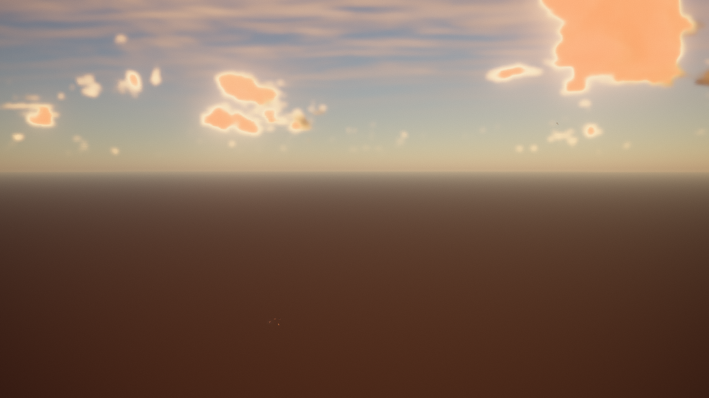
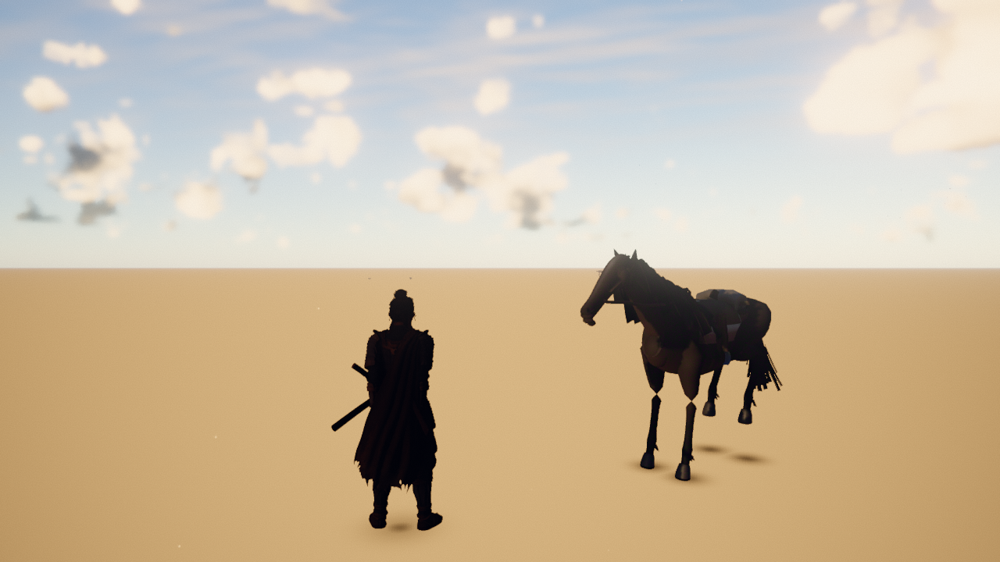
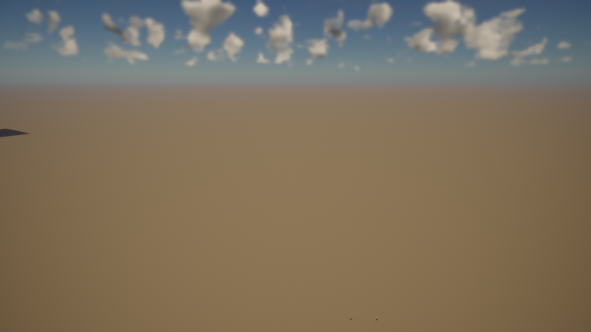
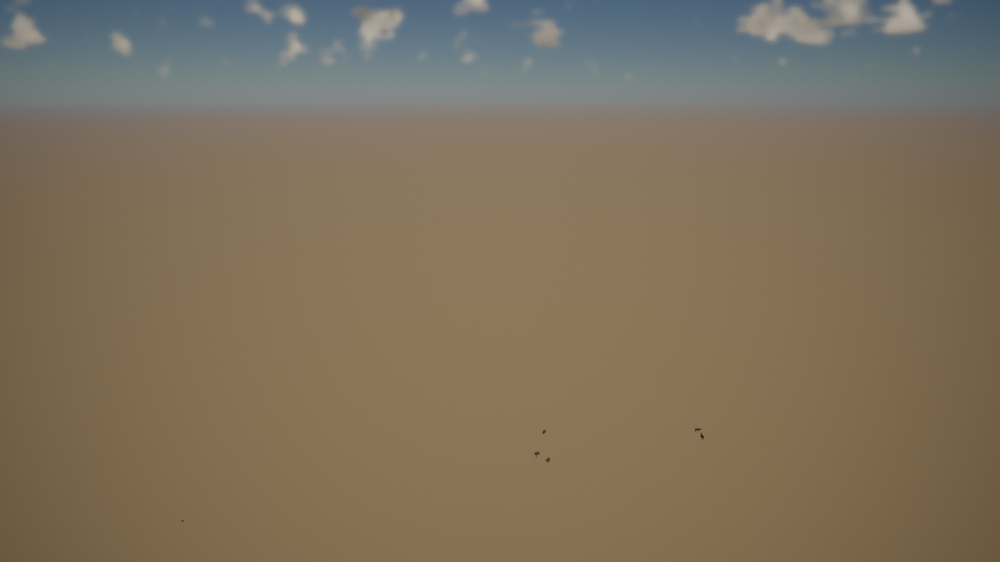
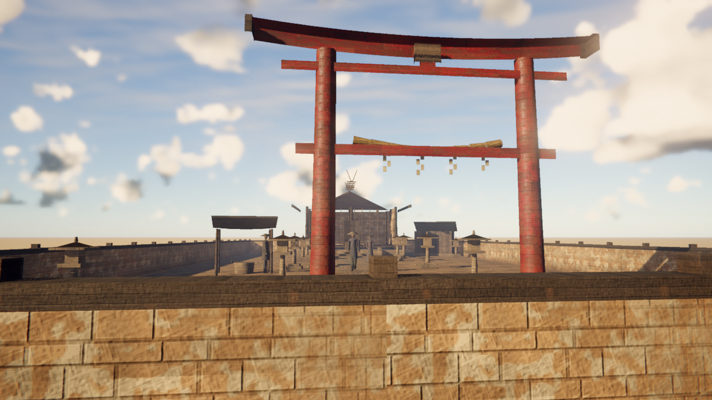

Hero vista
gap: western buttes, not a gold field
ours

ref
Stock is a dusty basin with mesa stacks. Target is waist-high gold grass, tall thin pines, god rays, a dark rider.
EP-02 · Grok 4.6 · live director board · updated wave 0 (stock baseline)

Stock is a dusty basin with mesa stacks. Target is waist-high gold grass, tall thin pines, god rays, a dark rider.


Procedural cowboy still in frame. Grass is shin-high on bare dirt. Camera sits too high.


Need dense gold sward, white flowers, shafts of light, petals.


Need a spawn-near stream, pampas, a log or stone bridge, rider silhouette.


Replace the settlement with a small shrine: torii, honden, stone lanterns, gravel.
Swap cowboy for public/assets/ronin.glb. Drive idle / walk / mount / ride.
Lower, wider, Ghost-of-Tsushima over-the-shoulder through the grass.
Waist-high gold, pampas tips, white flower specks, dense enough to hide the soil.
Tall thin pines + a few maples. Open meadow with stands, not confetti.
Rolling grassland. Far blue mountains. Stream near spawn. Kill the midground buttes.
Torii, shrine hall, stone lanterns. Keep POI names town / town_end.
Log bridge, no cactus/skulls/yucca. Rocks and fallen timber only.
Drifting petals and leaves through the golden volume.
Recipes: dusty brown → gold/green field.
God rays, warm haze, film grade. One owner for sky/clouds/grade.
Ink-on-gold Japanese title. Hide the western gun/wanted chrome.